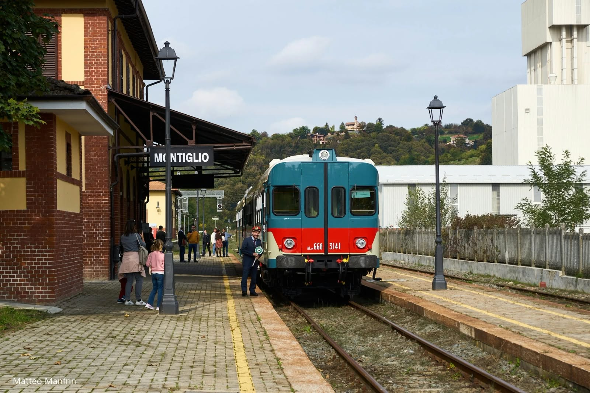
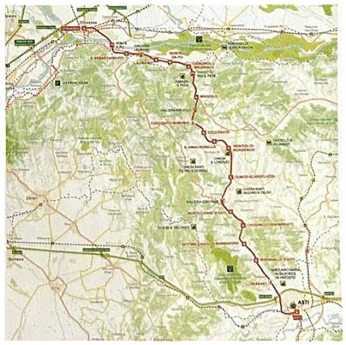
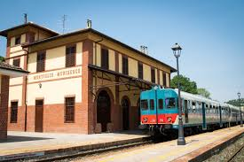

51 km · pendenza del 16‰
Tra la pianura e le colline
Il tracciato unisce Asti e Chivasso attraversando il Basso Monferrato, con pendenze che raggiungono il sedici per mille.
Un territorio, la sua ferrovia.
Tra colline, paesi e stazioni, cinquantuno chilometri di binari raccontano il Basso Monferrato: il lavoro, i viaggi quotidiani e il ritorno dei treni storici.
Scopri la storia della linea
Da un’idea ai binari
Le prime ipotesi di una ferrovia tra Asti e Chivasso risalgono al 1852. A sostenerla furono i comitati locali di un territorio agricolo, ricco anche di industrie della calce e del cemento.
Nel 1876 gli ingegneri Adorno e Roero ricevettero l’incarico dei progetti di massima. Il nodo principale rimase però il finanziamento: soltanto nel 1899 si poté cercare un’impresa privata per costruire la linea.
L’aumento della sovvenzione di 7.500 lire per chilometro consentì ai Comuni di avviare le trattative con la Società Veneta per la costruzione di ferrovie secondarie. Nel 1907 fu autorizzata l’asta pubblica.
L’appalto fu aggiudicato all’impresa dell’ingegnere svizzero Sütter, con convenzione firmata nel maggio 1909. I lavori iniziarono il 31 marzo 1910 e terminarono circa cinque mesi prima della scadenza prevista del 16 marzo 1913.
Il tracciato e le opere
Ponti, gallerie e fabbricati ferroviari: le opere che hanno dato forma alla linea.

51 km · pendenza del 16‰
Il tracciato unisce Asti e Chivasso attraversando il Basso Monferrato, con pendenze che raggiungono il sedici per mille.
I ponti
Il testo descrive un ponte sul Po lungo circa 300 metri, con dodici arcate, e quello sul Canale Cavour, di circa 60 metri, con un’unica travatura metallica.
Tre gallerie
La più lunga si trova fra Brozolo e Cocconato e misura 2.348 metri.

L’architettura della linea
Stazioni, caselli e case cantoniere condividono richiami architettonici tardo ottocenteschi. Il laterizio e l’intonaco evocano le tradizionali ville piemontesi.
Questa coerenza conferisce ai fabbricati della Asti–Chivasso un carattere riconoscibile e particolare.
Un secolo di trasformazioni
Il servizio, i viaggi dei pendolari e le difficoltà affrontate dalla ferrovia nel corso del Novecento.
La linea era percorsa da otto corse, con trazione a vapore e carrozze di prima, seconda e terza classe.
Dal primo gennaio furono introdotte le automotrici leggere, affiancando la trazione a vapore.
Crebbe l’importanza dei collegamenti verso Asti e Chivasso. Il documento racconta poi la sostituzione delle “Littorine” con le automotrici 668 Breda e Fiat.
Nel 1975 il servizio a vapore era ormai scomparso. Nel maggio 1982 iniziarono importanti interventi di ammodernamento, per 7,5 miliardi di lire.
La piena provocò il crollo di due arcate del ponte ferroviario sul Po, interrompendo la continuità della linea.
Dopo il ripristino, la linea riaprì. Gradualmente i nuovi “Minuetto” sostituirono le ALn 668 e 663.
Considerata a bassa frequentazione dalla Regione Piemonte, la linea vide sospendere il servizio.
Binari senza Tempo
La Asti–Chivasso entra nel progetto “Binari senza Tempo” della Fondazione FS, nata nel 2013 e legata all’impegno dell’ingegner Luigi Cantamessa per le linee secondarie.
Il documento colloca al 2 ottobre 2020 la riapertura ufficiale con due treni storici: un’automotrice ALn 668 proveniente da Cuneo e una locomotiva a vapore 625 arrivata da Torino e Chivasso.
I due convogli si incontrarono proprio alla stazione di Montiglio-Murisengo. L’iniziativa, sostenuta dalla Fondazione FS, dalle amministrazioni locali e dalle associazioni di volontariato, richiamò un grande pubblico.
Gli autori ricordano anche i treni storici organizzati per le Fiere del Tartufo di Montiglio e Murisengo. Il testo si conclude con l’auspicio di una riapertura completa a fini commerciali, anche al servizio dei pendolari.
Questo percorso riprende la ricostruzione del PDF: l’auspicio finale e i riferimenti al servizio si riferiscono al periodo narrato dagli autori.
Il documento
Testo originale di Giancarla Rosso e Piero Balestrino.
Questa pagina ne rielabora i contenuti, conservandone la prospettiva storica.